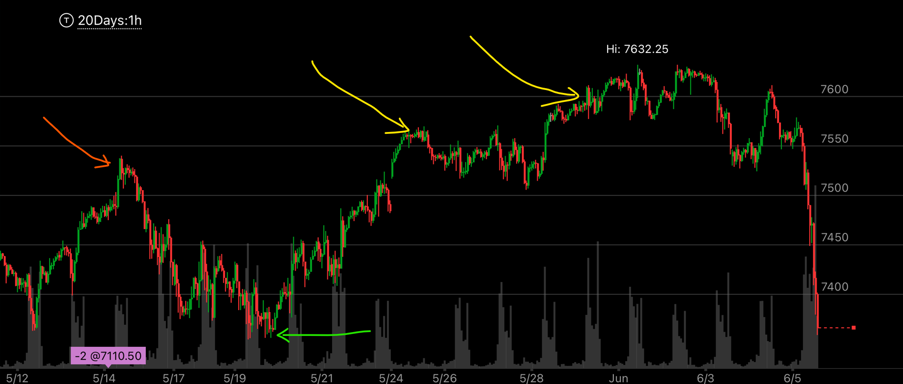
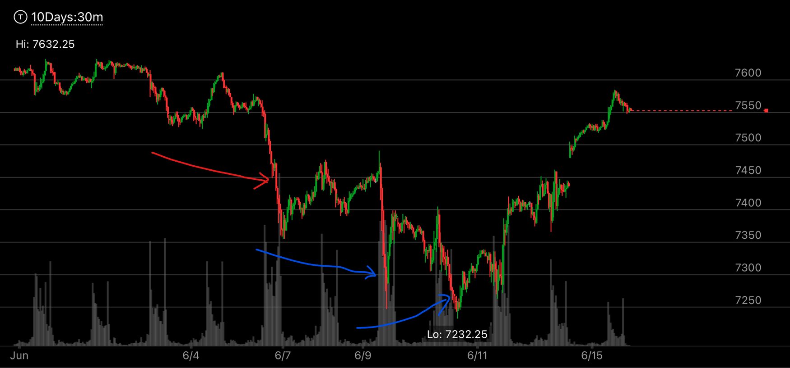

相对弱势下，两次加速反转走势
- 更大的走势是相对弱势，但是是缓慢的升高，并没有反转
- 这时，它走一个两段走势，其中第二段是连续两个加速下跌走势，这样，下跌也完成了。
要注意，一定要低于关键点，也就是相对弱势的低点。 这时，这个走势算是完成了。


图示:
- 先看图一，更大的走势中，是相对弱势。红色是第一个高点，绿色是拉回的低点。两个黄色，是缓慢的创新高。
- 然后下跌。要主意，这个是相对弱势，没有反转。
- 图二， 红色是前面图一的下跌走势，这个算是第一浪， 然后两个蓝色，就是两次加速。
- 图二， 红色下跌的点是前面相对弱势的低点，一定要有效低于这个点才行。后面蓝色就有效低于这个点了。 超过了100点。
- 图二， 第一个蓝色，创新低后，立刻反弹，第二个蓝色，创勉强新低后，稍微慢速反弹。这个就是反转了。 看看后来，它已经反弹了。